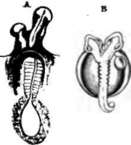

199. The Simplest Method Of Multiplication
Description
This section is from the book "Animal Physiology: The Structure And Functions Of The Human Body", by John Cleland. Also available from Amazon: Animal Physiology, the Structure and Functions of the Human Body.
199. The Simplest Method Of Multiplication
The Simplest Method Of Multiplication observed in any set of living bodies is by splitting up into different parts, each of which becomes a distinct individual. This is called multiplication by fissiparous division, and is principally found in the very simplest forms, such as unicellular organisms. It is precisely the same mode of multiplication, occurring in distinct beings, as that by which cartilage-corpuscles and others increase in number.
When small portions, or buds, are separated from a parent, the mode of reproduction is said to be of a gemmiparous description; and if the bud should happen to be only a single nucleated corpuscle devoted to reproduction, separated from a large mass of such corpuscles, or from an organism however complex, yet it is plain that it may be none the less fairly considered as a bud or germ from the whole organism. Now, that is precisely what an ovum essentially is: but an ovum, whether vegetable or animal, has the peculiarity that it will not develop into a new individual unless there be incorporated with it another germ of dissimilar kind, though derived from the same species of organism; and herein consists the essence of sexual reproduction. The germ which appears to retain its individuality before and after fertilization is the ovum, or female element; while that which disappears by being incorporated therewith is the male element.
200. In the present state of science no explanation can be given why such a thing as sex should exist. It is difficult to say how far down in the organic world the distinction of sex extends, but it exists in organisms of exceedingly simple character; and in those of more complex descriptions, although in certain instances a series of generations are produced by mere gemmiparous reproduction, sexual reproduction is always resorted to after a cycle has been passed through.
The modes in which such cycles are accomplished are very various. In many instances, both in cryptogamic plants and in the lower forms of animals, there is a manifest alternation of generation. Thus the spores on the frond of a fern are asexual germs, which grow up to form a lichen-like plant, the prothailus; the prothallus bears upon it male and female elements, and from the union of these the young fern takes ita rise. So also among animals, in many hydroid zoophytes the zoophytie form, which is the more largely developed condition, gives origin by gemmation to medusoids bearing male and female elements, and from the fertilised ova of these medusoids new colonies of zoophytes take origin. There are many other examples of alternation of generation among animals; but the interest in this case is increased by the circumstance, that in other hydroid zoophytes the buds which bear the sexual elements remain attached as mere organs of the zoophyte, never attaining to an independent existence; and thus one is enabled to see that the power of the medusoid to reproduce the zoophyte is but a modification of the more frequently exemplified power of a part to reproduce a whole, the modification being that the reproductive part is entirely severed before the sexes are developed. In the larger Mcdusæ, or jelly fish, a similar alternation takes place, only the sexual form is the more largely developed; the ovum takes root and grows into a body which breaks up into a series of discs, each of which is developed into a medusa.
Fig. 137. Alternate Generation of Hydroid Zoophyte (Bougain villi a raraosa). A, Zoophytic form; a, medusoid. B, Liberated medusoid. After Allman.
Fig. 138. Alternate Generation of Aurelia aurita. A, Ciliated ovum become adherent. B, The same at a later stage sending out processes. C, Strobilus, which breaks up into separate cups, each of which becomes an adult Aurelia. After Sara.
In the Aphides, or plantlice, another cycle is exhibited. In the interior of the individuals derived from fertilized ova, another generation is developed from unimpregnated germs; and the insects so formed become parents of others in like manner; and only after several generations are perfectly sexual individuals produced, with whom the cycle again begins.
In bees there occurs a description of true parthenogenesis. The queen, in her marriage flight at the time of swarming, receives the male element into a sac provided for the purpose, and afterwards in laying her eggs, adds or withholds a little of the contents of the sac; when this is withheld the egg produces a male; but when it is added a female is produced, which, according as it is fed, becomes a worker or a queen.
Fig. 139. Double-headed Embryos. A, Chick (in my possession). B, Perch (Von Baer).
In vertebrata, sexual reproduction is the only kind which occurs. Yet in the development of the embryo there is a set of phenomena quite homologous with alternate generation; for the whole ovum is not converted into an embryo, but only a part of it, and, therefore, the embryo may be legitimately considered as a bud from the ovum; in which case the only difference between vertebrate reproduction and that of a medusa is, that in the medusa many buds are derived from an ovum, and in the vertebrata there is only one.* As an abnormal variation, the single vertebrate embryo may divide more or less completely; and this is the origin of all double monstrosities, such as two-headed calves, four-legged hens, the " Siamese twins," and the negress sisters exhibited as the " two-headed nightingale." The proof of this is found in the fact that embryos in early stages of development have been seen thus partially divided, and in the law of double monstrosities that they are always united by corresponding parts.
201. Akin to the power of reproducing the whole individual is the power of reproducing lost parts; and the law may be laid down that the less advanced the development of the species or the individual the greater the power of such reproduction. So great is this power in some invertebrate animals that they may be multiplied by artificial division, each moiety retaining the power of completing a whole form. Even animals so complex as lobsters have notably the power of reproducing lost limbs. No such power exists in vertebrate animals after birth, with the exception that various reptiles and fishes renew their tails when they have been accidentally lost; substituting, however, calcified chorda dorsalis for the lost vertebræ. But before birth lost parts may be reproduced, even in man, to a surprising extent. Sometimes, from accidental causes, a limb of an unborn child suffers amputation by means of strangulation by a band of lymph; and in such cases it often occurs that fingers, or a whole hand, sprout out from the stump of an arm, although they fail to reach the full development. This is particularly interesting, as indicating the latent presence throughout the body of the reproductive power which is exhibited normally and in perfection by the reproductive organs alone. So, also, the occasional occurrence of ovarian tumours containing hair and teeth shows the presence of a power which is normally altogether latent till the addition to the ovum of an element containing similar qualities locked up within it causes it to culminate in full reproduction.
Viewing the vertebrate embryo as a bud from the ovum, a comparison by no means vague may be drawn between its development and that of a tooth. In both instances there is an elevation which becomes surrounded by a fossa, afterwards converted into a shut sac, Mad finally the shut sac is burst.

Fig. 140. Human Ovum within Graafian vesicle, a, Germinal vesicle and spot; b, vitellns or yelk; c, zona pellucida; d, discus proligerus; e, membrana granulosa; f, vascular wall of ovisac ; g, stroma of ovary; h, surface of ovary.
Continue to:
- prev: 198. Speech
- Table of Contents
- next: 202. The Ovum Or Egg